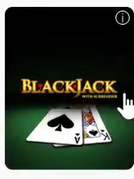
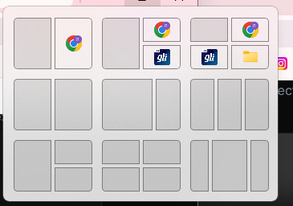

Connect BettrBot to Blackjack with Surrender on FanDuel Casino, map the game's buttons once, and let the bot play.
In BettrBot, choose your browser (Chrome, Edge or Brave) and click Connect. A new browser window opens on FanDuel Casino.
In the window that opened, log in to your FanDuel Casino account. If FanDuel asks you to verify your location, finish that before moving on.
Search for Blackjack and open Blackjack with Surrender. Look for this tile:

Place a bet and deal one hand yourself. Once BettrBot sees the game, the status turns Connected and the Activity Log shows Blackjack game detected.
BettrBot plays by clicking the real buttons with your mouse, so it needs to know where they are on your screen. In the Button Mapping panel:
Use Windows Snap Layouts to place the game window, so it lands in the exact same spot every time and your mapping keeps lining up. Hover over the window's maximize button (or press Win + Z) and pick a layout, for example BettrBot on one side and the game on the other.

If the game window ever moves or the browser zoom changes, map the buttons again.
Want the bot to bet a little less or more now and then? Fill in Low Bet Size and/or High Bet Size, then map these extra buttons under Bet controls:
Set your Bet Size, press Start, then deal the first hand yourself. From there BettrBot plays every hand and deals the next one for you.
Need help? Text us anytime.
(224) 304-4728